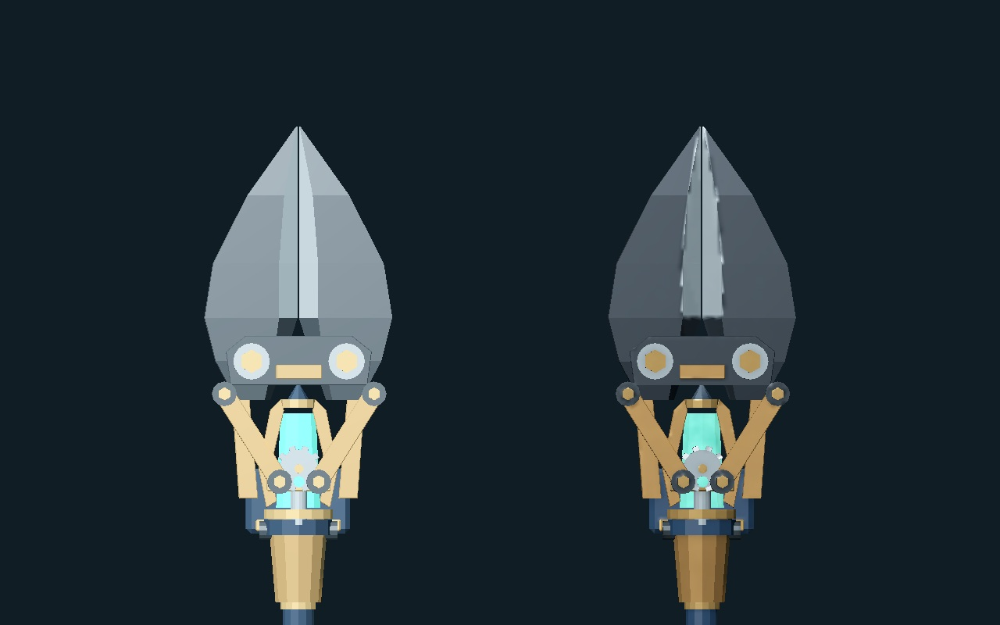
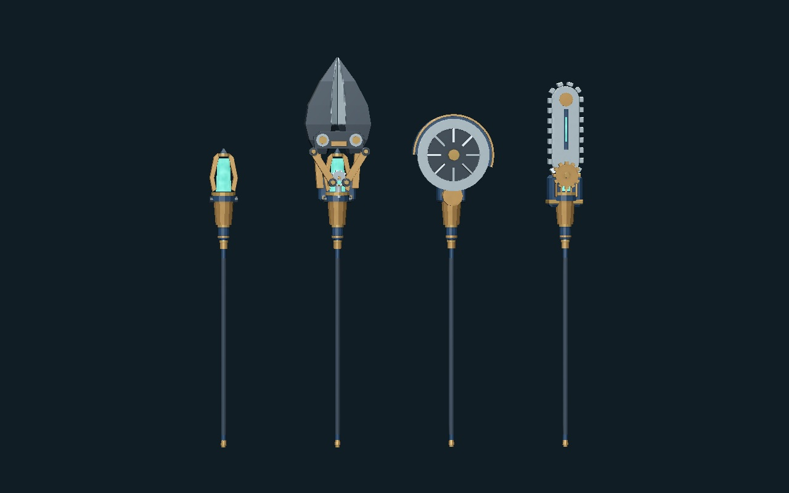
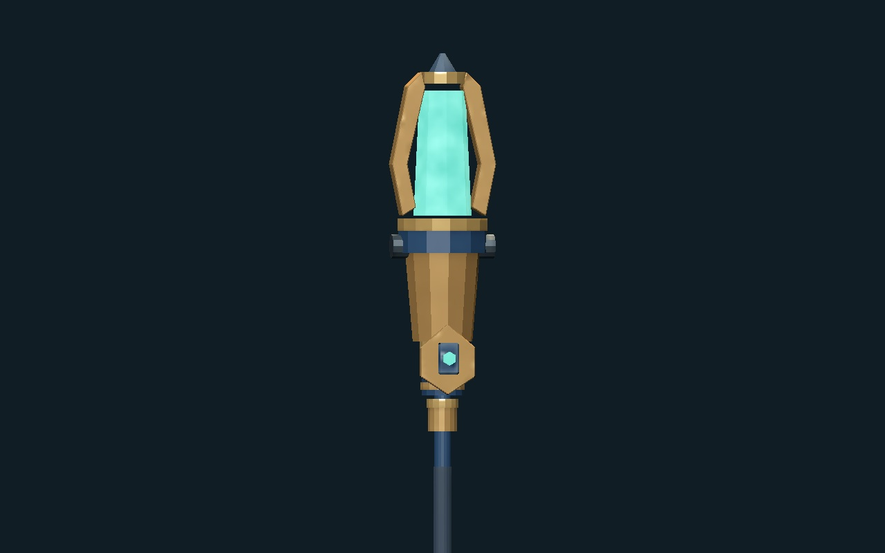

MACHINERY WITCH / MATERIAL STUDY / V3
황동, 도장, 강철의 표면을 구분했습니다
남색 도장의 은은한 광택, 황동의 변색과 작은 모서리 마모, 차분한 강철과 밝은 절삭면을 함께 조정했습니다. 코어는 원래의 청록색을 살리고 표면에 깊이를 더했습니다.
남색 반광 도장낡은 황동연마된 절삭면청록 동력 코어
같은 조명에서 비교
기존 재질다듬은 재질

형태와 자세, 조명을 동일하게 두었습니다. 날의 개폐 구조는 선택한 v2 그대로입니다.
회전과 실제 게임 동작

회전 보기는 재질 확인용 조명입니다. 전투·이동·실제 크기 보기는 게임의 기존 조명을 그대로 사용합니다.
공통 자루와 장식에도 같은 재질


전체 공구가 같은 텍스처 묶음을 공유합니다. 코어의 발광은 원래 발광하던 면에만 적용해 금속 부품으로 번지지 않게 했습니다.
형상과 동작은 유지하면서 UV와 재질을 정리했습니다. 새 재질의 마모량과 광택은 이번 비교 화면에서 검토할 수 있습니다.
448개 검사 · 실제 GPU 캡처 298장. 검증과 파일 해시 · 작업 원본과 인계 · 이전 볼트커터 시안
최종 재질 선택과 GPU 성능 검토는 별도입니다.